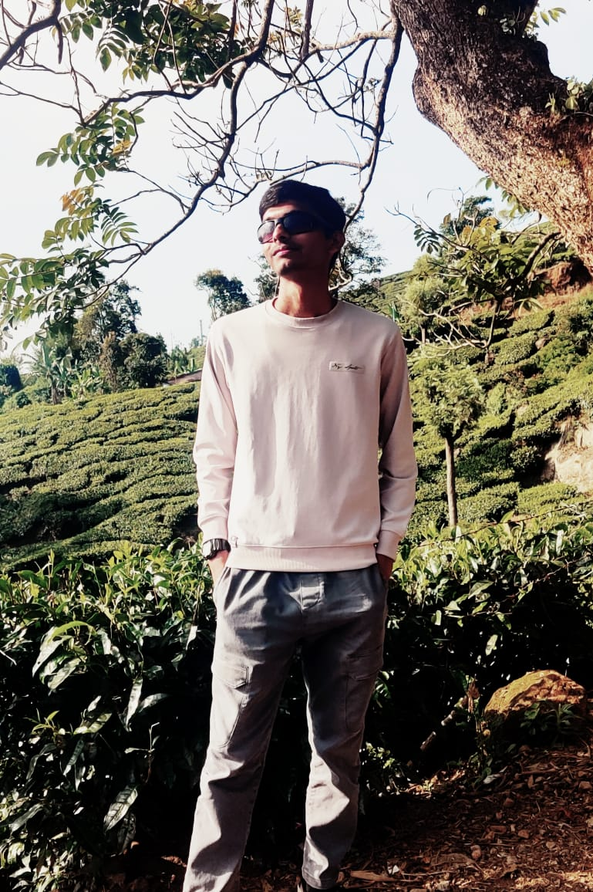

Undergraduate Researcher, MT-NLP Lab, IIIT Hyderabad
- Investigating LLM reasoning, in-context learning and internal representations.
- Exploring techniques for efficient LLM inference and empirical model evaluation.

I'm a B.Tech and M.S. (Computational Linguistics) student at IIIT Hyderabad and an undergraduate researcher in the MT-NLP Lab, working on LLM reasoning, in-context learning and model internals.
I've also built a Transformer and tokenizer from scratch in PyTorch, a network file system in C, and a thermal vision system during a research internship at KPIT Apex Lab. I'm looking for internships and research projects.
Vision-language models can fail on charts by misreading the figure or by fabricating a value. We study whether the difference is visible in a frozen model's internal state before it generates (Qwen2.5-VL-7B and LLaVA-NeXT-7B, on ChartQA and synthetic bar-chart pilots), using linear probes on cached activations, a repair experiment, and a type-aware controller compared against selective prediction.
A security layer for LLM agents and tool-using systems that enforces authorization and policy controls, with prompt-injection detection, request filtering and safeguards against unsafe tool calls.
A proposed benchmark of multi-document financial clusters (10-K and 10-Q filings) with multi-turn chart refinement dialogues, plus C-X-Doc2Chart, a training-free wrapper that adds stateful caching, unit normalisation and delta code edits so that follow-up requests don't rerun extraction or break earlier charts. Evaluation uses sandboxed execution and structural checks instead of text matching.
Implemented the Transformer, a BPE tokenizer and the evaluation pipeline in PyTorch without
nn.Transformer or prebuilt tokenizers, then ran a one-change-at-a-time ablation
(RoPE, grouped-query attention, RMSNorm, token-free BLT) on translating encrypted 512-bit
strings into English. The byte-level BLT reconstructed every test sequence exactly, versus 41–43%
for the subword variants, and trained in about half the time.
Systems for detecting machine-generated code across languages, domains and generators, covering binary detection, authorship attribution and hybrid code. Used structure-aware models (GraphCodeBERT) and ensembling to improve on the CodeBERT baseline, with a focus on generalising to unseen languages.
A multi-agent simulation of an options trading desk for NSE index contracts. Agents detect market regimes from India VIX and order flow imbalance, calibrate a SABR volatility smile, route orders through a mock Zerodha Kite API with guardrails, and estimate 99% Expected Shortfall with Monte Carlo before a mean-variance allocation under delta-neutral constraints. A self-healing agent patches parser failures at runtime, and LLM calls fail over across OpenAI, Anthropic and Gemini to local heuristics.
A web application that scores the credibility of corporate announcements for retail investors. It combines rule-based checks with a machine learning model and cross-checks claims against live financial data and news sentiment.
A distributed file system in C with a central name server, multiple storage servers, access control and checkpoint-based file versioning, plus a command-line client and a browser interface for file management.
A single platform for clubs to run events and for participants to register and track them, replacing the Google Forms, spreadsheets and WhatsApp groups used during Felicity Fest.
A Unix shell with job control, pipes, redirection and built-in commands, written in C with a modular design and error handling.
The best way to reach me is kadam.shrishk@gmail.com. I'm also on GitHub and LinkedIn.